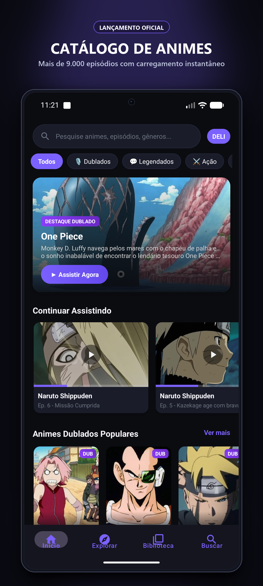
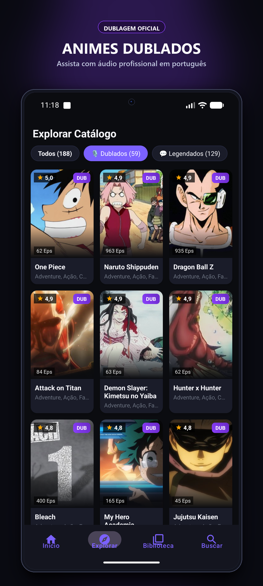
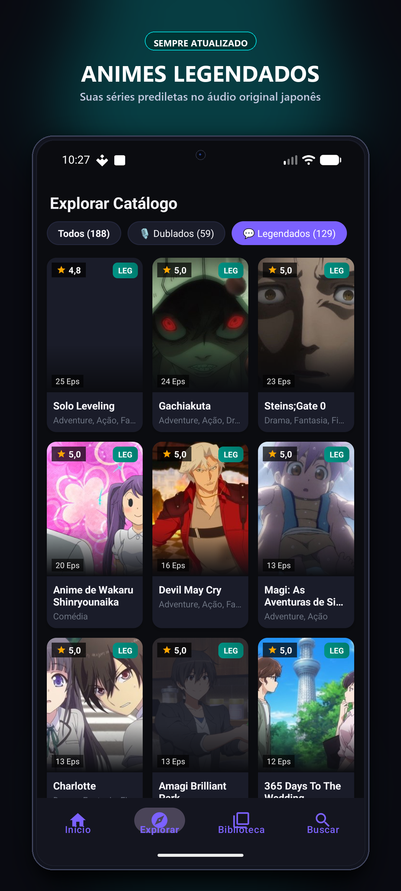
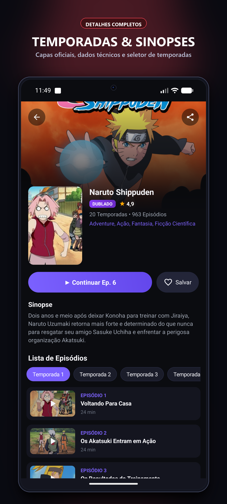
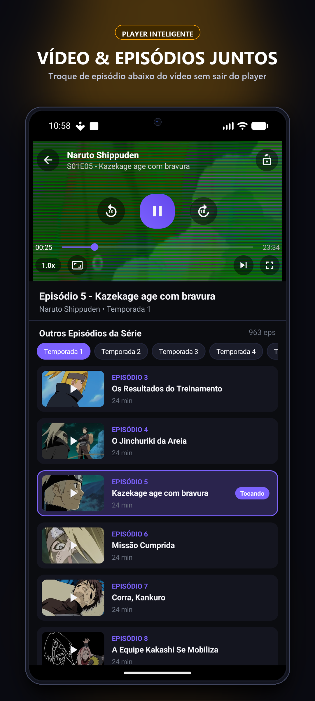
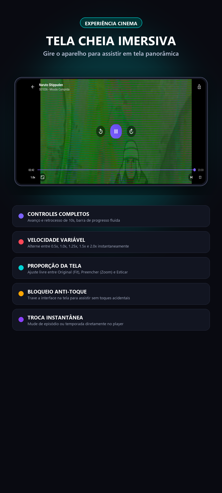
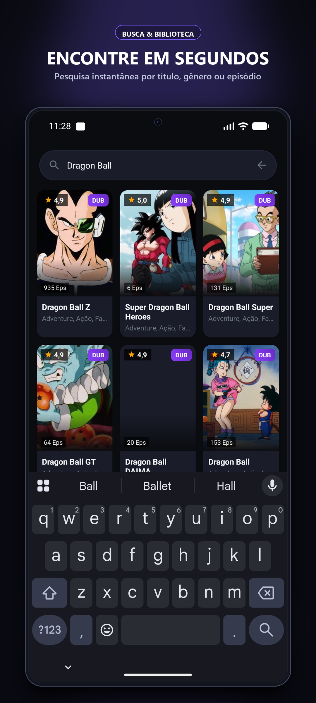

Catálogo & Hero Banner
One Piece em destaque e Continuar Assistindo
Assista a mais de 188 animes completos e mais de 9.390 episódios em alta definição sem esperas. Desenvolvido com banco de dados local SQLite para navegação instantânea em 0ms, player inteligente vertical com lista de episódios abaixo do vídeo e tela cheia cinema panorâmica.
Interface moderna, minimalista e limpa, projetada para destacar as capas, temporadas e garantir a melhor experiência de streaming no seu smartphone.







Criamos o Deli Animes do zero para resolver todos os problemas de lentidão, desorganização e excesso de anúncios comuns em outros apps.
Carregamento imediato sem telas de espera ou "carregando...". O catálogo de 188+ animes e 9.390 episódios abre em milissegundos mesmo em redes móveis instáveis.
Filtros instantâneos dedicados para animes dublados em português brasileiro (One Piece, Dragon Ball, Naruto, etc.) e legendados em japonês com badges visuais claros.
No modo retrato, assista ao episódio atual no topo enquanto rola a lista dos próximos episódios logo abaixo. Mude de capítulo com 1 toque sem sair do player.
Basta rotacionar o aparelho para entrar no modo tela cheia cinematográfico com suporte a avanço/retrocesso de 10s, controle de aspecto e trava de tela.
Cards com proporção de capa oficial 2:3, tipografia fluida, paleta escura suave aos olhos e navegação por abas inferiores (Início, Explorar, Biblioteca e Buscar).
O aplicativo memoriza exatamente o minuto e segundo onde você parou em cada episódio e salva o progresso na tela inicial para você retomar instantaneamente.
Encontre qualquer anime por nome em português, nome original japonês ou gênero em tempo real com sugestões imediatas.
Não solicitamos cadastro, e-mail, senhas nem formas de pagamento. Instale, abra e comece a maratonar seus animes imediatamente.
| Recurso / Experiência | Deli Animes | Outros Aplicativos |
|---|---|---|
| Carregamento do Catálogo | ⚡ Instantâneo (Banco SQLite Nativo) | ❌ Lento (Requisições constantes de API) |
| Organização de Áudio | 🎙️ Abas separadas Dublado / Legendado | ❌ Misturado e difícil de identificar |
| Troca de Episódios no Player | 🎬 Lista integrada abaixo do vídeo | ❌ Obriga a fechar o player e voltar |
| Design & Usabilidade | 💎 Inspirado no Google Play Livros | ❌ Layouts genéricos e poluídos |
| Privacidade do Usuário | 🛡️ Zero coleta de dados (LGPD) | ❌ Exigência de login e permissões |
Sim! O aplicativo não cobra taxas, mensalidades nem possui planos pagos ocultos. Todos os animes, episódios, temporadas e recursos do player são acessíveis gratuitamente para todos os usuários.
O app reúne as maiores obras da animação japonesa com dublagem profissional brasileira, incluindo One Piece, Naruto Clássico e Shippuden, Dragon Ball Z e Super, Bleach, Attack on Titan, Death Note, Demon Slayer, Jujutsu Kaisen, Fairy Tail, Black Clover, Hunter x Hunter e muito mais.
Basta tocar no botão de tela cheia no canto inferior direito do player de vídeo ou simplesmente girar o seu smartphone na horizontal (paisagem). O app detecta a orientação do sensor e oculta as barras do sistema para uma imersão cinematográfica total.
Sim! Toda vez que você assiste a um episódio, o Deli Animes registra automaticamente o tempo exato e a porcentagem assistida no banco de dados local. Na tela inicial, o carrossel "Continuar Assistindo" exibe a barra de progresso para você retomar o vídeo com um toque.
Não. O Deli Animes não exige cadastro, não solicita nome, e-mail, telefone, documentos nem dados bancários. Suas preferências, favoritos e histórico de reprodução permanecem exclusivamente gravados na memória local do seu aparelho.